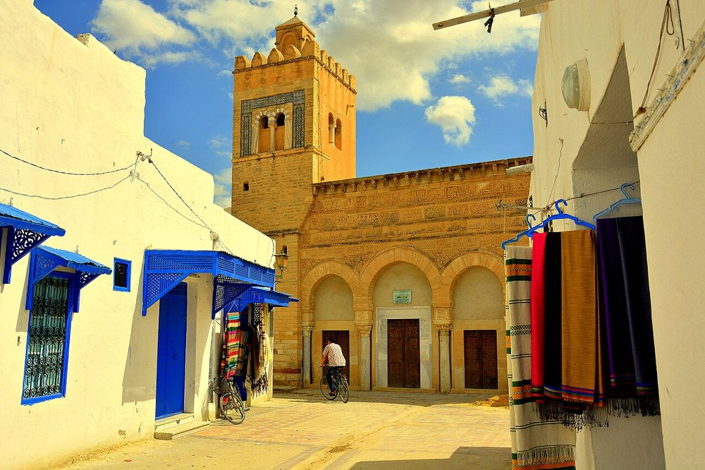
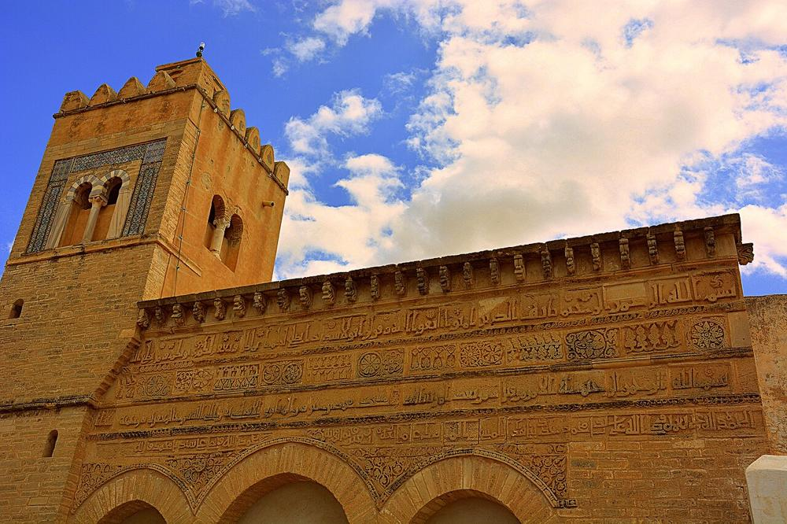

PrésentationتقديمOverview
Un petit oratoire de la médina de Kairouan, connu dans le monde entier pour sa façade de 866 : la plus ancienne façade de mosquée sculptée et décorée du monde islamique.مصلّى صغير في مدينة القيروان العتيقة، يعرفه العالم كله بواجهته التي تعود إلى سنة 866: أقدم واجهة مسجد منحوتة ومزخرفة في العالم الإسلامي.A small oratory in the medina of Kairouan, known worldwide for its façade of 866: the oldest carved and decorated mosque façade in the Islamic world.
PhotosصورPhotos


HistoireالتاريخHistory
Vers 866, un commerçant andalou installé à Kairouan, Mohammed ibn Khayrun al-Maafiri, fait construire cet oratoire de quartier ; l'inscription de la façade donne son nom et la date. Vers 1440, à l'époque hafside, la mosquée est restaurée et reçoit un petit minaret : un bandeau de la façade le rappelle.نحو سنة 866 بنى تاجر أندلسي مقيم بالقيروان، هو محمد بن خيرون المعافري، هذا المصلّى في حيّه، وتذكر كتابة الواجهة اسمه وتاريخ البناء. ونحو سنة 1440، في العهد الحفصي، رُمّم المسجد وأضيفت إليه صومعة صغيرة، ويذكّر بذلك شريط في الواجهة.Around 866, an Andalusian merchant living in Kairouan, Muhammad ibn Khayrun al-Ma'afiri, had this neighbourhood oratory built; the inscription on the façade gives his name and the date. Around 1440, in the Hafsid period, the mosque was restored and given a small minaret, as a band on the façade records.
ArchitectureالعمارةArchitecture
La façade, haute d'environ sept mètres, ouvre trois arcs sur des colonnes antiques ; au-dessus, des bandeaux d'écriture coufique en relief citent le Coran (sourate 33, versets 70-71) et la fondation, entre des frises de rosaces et de feuilles de vigne. À l'intérieur, une salle de prière d'environ 9 × 9 mètres, sans cour, de trois nefs sur colonnes antiques.تفتح الواجهة، بارتفاع نحو سبعة أمتار، ثلاثة أقواس على أعمدة قديمة، وفوقها أشرطة من الخط الكوفي البارز تتضمّن آيتين من القرآن (سورة الأحزاب، الآيتان 70-71) وخبر التأسيس، بين أفاريز من الوريدات وأوراق الكرم. وفي الداخل بيت صلاة بأبعاد نحو 9 × 9 أمتار، بلا صحن، من ثلاث بلاطات على أعمدة قديمة.The façade, about seven metres high, opens with three arches on ancient columns; above them, bands of raised Kufic script quote the Quran (sura 33, verses 70-71) and the foundation, between friezes of rosettes and vine leaves. Inside, a prayer hall of about 9 × 9 metres, without a courtyard, has three aisles on ancient columns.
Dates clésتواريخ مهمّةKey dates
- 866Construction par Mohammed ibn Khayrunالبناء على يد محمد بن خيرونBuilt by Muhammad ibn Khayrun
- 1440Restauration hafside et petit minaret (vers 1440-1441)الترميم الحفصي والصومعة الصغيرة (نحو 1440-1441)Hafsid restoration and small minaret (around 1440-1441)
- 1988Kairouan inscrite au patrimoine mondial de l'UNESCOتسجيل القيروان في قائمة التراث العالمي لليونسكوKairouan inscribed as UNESCO World Heritage
VisiterالزيارةVisiting
C'est d'abord un lieu de prière : venez en tenue correcte, retirez vos chaussures pour entrer dans la salle de prière et évitez les heures de prière. Dans plusieurs grandes mosquées, les visiteurs non musulmans peuvent entrer dans la cour, pas dans la salle de prière. Les horaires changent : renseignez-vous sur place.هو أولًا مكان للصلاة: البس لباسًا محتشمًا، واخلع حذاءك لدخول بيت الصلاة، وتجنّب أوقات الصلاة. وفي عدد من الجوامع الكبرى يمكن للزوار غير المسلمين دخول الصحن دون بيت الصلاة. تتغيّر المواعيد: استعلم في عين المكان.It is first of all a place of prayer: dress modestly, take off your shoes to enter the prayer hall and avoid prayer times. In several great mosques, non-Muslim visitors may enter the courtyard but not the prayer hall. Opening times change: ask on site.
Sur la carteعلى الخريطةOn the map
Documents et liensوثائق وروابطDocuments and links
SourcesالمصادرSources
- Textes rédigés par Mosquées en Tunisie à partir des documents ci-dessus (Wikipédia, Qantara, Discover Islamic Art, UNESCO), vérifiés le 09/10/2026.نصوص كتبها موقع مساجد تونس اعتمادًا على الوثائق أعلاه (ويكيبيديا، قنطرة، اكتشف الفن الإسلامي، اليونسكو)، رُوجعت في 09/10/2026.Texts written by Mosques in Tunisia from the documents above (Wikipedia, Qantara, Discover Islamic Art, UNESCO), checked on 09/10/2026.
- Wikidata : Q3324931 (CC0)
- Photos : Wikimedia Commons, auteur et licence sous chaque photo.الصور: ويكيميديا كومنز، المؤلف والرخصة تحت كل صورة.Photos: Wikimedia Commons, author and licence under each photo.
- Position : OpenStreetMap (ODbL) et Wikidata.الموقع: OpenStreetMap (ODbL) وويكي بيانات.Location: OpenStreetMap (ODbL) and Wikidata.